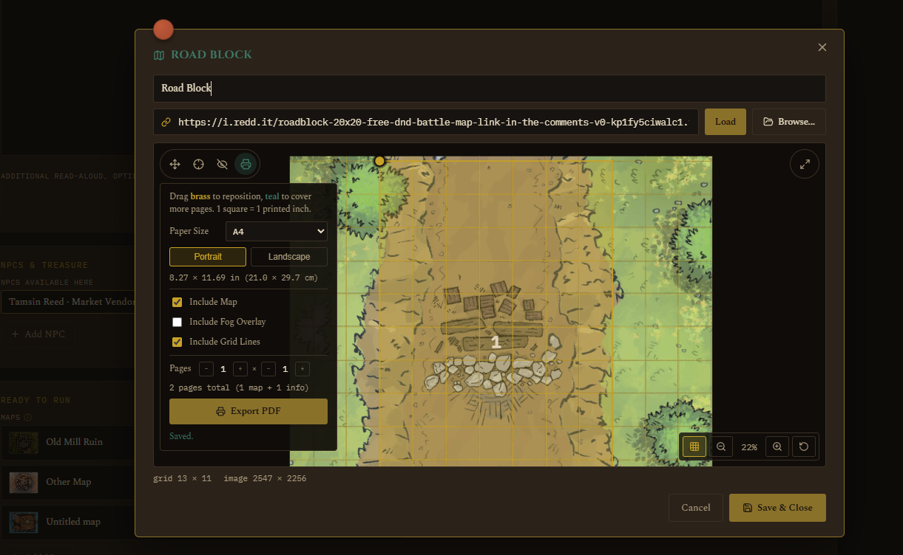

Setting Up a Map
Preparation · Setting Up a Map
Do this before a session so you're not fumbling with grid calibration while people are waiting.
- On a location's Campaign Prep page, add a map by pasting an image URL and clicking Load, or Browse... for a file on your own computer.
- This opens the map popup with four modes: Pan & View, Calibrate Grid, Fog of War, and Print (see below).
- In Calibrate mode, drag the two handles onto adjacent grid intersections on the image. The app uses that spacing to work out real distances later (for the ruler tool, spell radius labels, and so on). You can also select a handle and nudge it with arrow keys for precision.
- In Fog of War mode, click or drag to mark which cells are hidden by default when a session starts. This sets the baseline, not what's revealed live during play, that gets edited separately once a run is underway.
- Click Save & Close when you're done.

If you want to place tokens ahead of time (an ambush, a set encounter), open the encounter from Campaign Prep and use its Map Setup section. It uses the same placement grid as the live battle map, so tokens you place here are exactly where they'll be when you hit Start, see Running a Live Session.
Printing a map for the table
A fourth mode, Print, next to Pan & View/Calibrate Grid/Fog of War, exports a calibrated map as a real, physical-scale PDF, 1 grid square always prints as exactly 1 inch, derived from the map's own calibration above, not separately adjustable. Drag the brass handle to reposition which area prints, drag teal to cover more pages. Pick a paper size (Letter, A4, Legal, Tabloid, A3) and orientation, and choose whether to include the map art, the grid lines, and a separate fog overlay sheet, meant to be printed on its own and physically laid over the map, lifted as the party explores.

The exported PDF includes the map page(s) at true scale, plus a closing info page with the calibration details and a QR code back to the app.

Want to see a real one before trying it yourself? Download a sample printable map PDF, exported straight from the app's own built-in starter adventure.